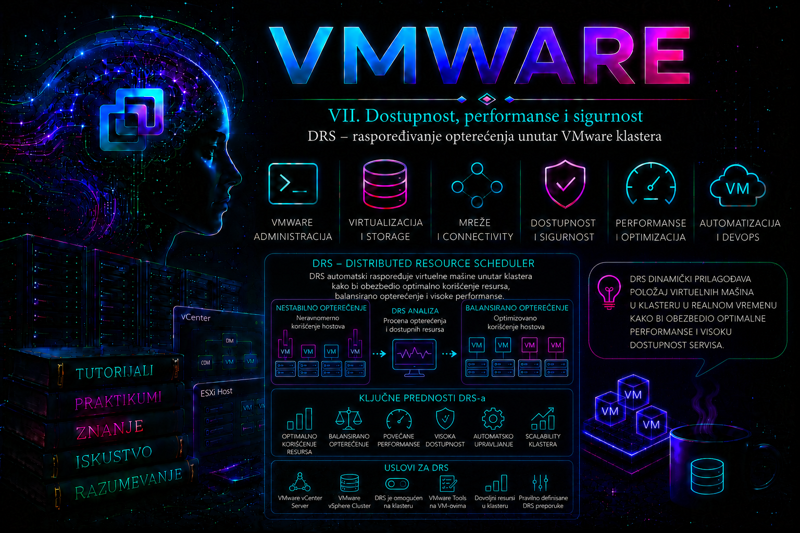

VMware

Šta je Distributed Resource Scheduler (DRS)
Distributed Resource Scheduler (DRS) predstavlja mehanizam za inteligentno upravljanje računarskim resursima unutar VMware vSphere klastera. Za razliku od High Availability (HA), čiji je zadatak oporavak nakon otkaza hosta, DRS radi neprekidno tokom normalnog rada infrastrukture i nastoji da virtuelnim mašinama obezbedi najbolje moguće uslove za izvršavanje koristeći raspoložive CPU i memorijske resurse svih hostova u klasteru.
Najvažnije je razumeti da DRS nije sistem koji "izjednačava procenat opterećenja hostova". To je pojednostavljeno objašnjenje koje više nije potpuno tačno za savremene verzije vSphere-a.
Od vSphere 7 pa nadalje algoritam je potpuno promenjen. Umesto da posmatra isključivo hostove, DRS prvenstveno procenjuje kvalitet rada svake pojedinačne virtuelne mašine (VM DRS Score odnosno VM Happiness). Cilj nije da svi hostovi imaju isti procenat zauzeća već da svaka VM dobije što bolje uslove za izvršavanje uz minimalan broj nepotrebnih vMotion migracija.
Drugim rečima:
- HA reaguje kada host otkaže.
- vMotion izvršava samu migraciju.
- DRS odlučuje da li migracija uopšte ima smisla.
Mesto DRS-a u VMware arhitekturi
DRS je komponenta vCenter Server-a.
ESXi hostovi sami po sebi ne donose DRS odluke.
Kompletna analiza izvršava se u okviru vCenter-a koji prikuplja telemetriju svih hostova, izračunava optimalan raspored VM-ova i zatim koristi vMotion da izvrši planirane migracije.
Pojednostavljen tok izgleda ovako:
- ESXi hostovi šalju informacije o CPU, memoriji i drugim resursima.
- vCenter prikuplja metrike.
- DRS obrađuje stanje celog klastera.
- Izračunava DRS Score za svaku VM.
- Analizira cenu migracije.
- Ako korist prevazilazi trošak, pokreće vMotion.
- Nastavlja praćenje rada klastera.
Važno je razumeti da DRS nikada ne migrira VM "reda radi". Svaka migracija predstavlja određeni trošak CPU vremena, mrežnog saobraćaja i VM stun intervala. Savremeni DRS upravo zbog toga pokušava da izvrši što manje migracija koje donose najveću korist.
Preduslovi za korišćenje DRS-a
Administrator često uključi DRS očekujući da će odmah raditi, a zaboravi da nekoliko drugih VMware tehnologija mora prethodno biti ispravno konfigurisano.
Minimalni preduslovi uključuju:
- vCenter Server
- Cluster objekat
- više ESXi hostova
- zajednički datastore ili Shared Nothing vMotion kada je podržan za konkretan scenario
- ispravno konfigurisan vMotion VMkernel
- DNS rezoluciju
- sinhronizovano vreme
- odgovarajuće licence koje podržavaju DRS funkcionalnost za konkretno izdanje vSphere platforme.
Bez ispravnog vMotion-a DRS praktično ne može izvršavati automatsko balansiranje jer nema način da prebaci VM između hostova.
Kako DRS procenjuje stanje klastera
Administrator početnik često posmatra samo:
- CPU Usage
- Memory Usage
DRS koristi daleko više parametara.
U procenu ulaze između ostalog:
- CPU Ready Time
- CPU contention
- NUMA raspored
- cache locality
- memory pressure
- ballooning
- compression
- host reservations
- VM reservations
- resource shares
- network cost migracije
- trajanje potencijalnog dobitka nakon migracije.
Jedna VM može imati loš DRS Score iako host izgleda "poluprazan".
Razlog može biti:
- CPU Ready
- NUMA neusklađenost
- lokalni memory pressure
- loš raspored velikih VM-ova.
Zbog toga ozbiljan administrator nikada ne donosi zaključak samo na osnovu procenta zauzeća hosta.
DRS Score (VM Happiness)
Od vSphere 7 uveden je novi koncept koji predstavlja jednu od najvećih promena u radu DRS-a.
Svaka virtuelna mašina dobija sopstvenu ocenu rada.
Ocena predstavlja procenu koliko VM trenutno dobija resursa koji su joj potrebni.
Što je ocena veća:
- VM radi efikasnije
- ima manje čekanja CPU resursa
- ima manje memorijskog pritiska
- nije potrebno njeno premeštanje.
Ako bi migracija značajno povećala DRS Score, DRS će predložiti ili automatski izvršiti vMotion u zavisnosti od režima automatizacije.
Periodična analiza klastera
Starije verzije DRS-a radile su analizu u znatno dužim intervalima.
Od modernih verzija vSphere analiza se izvršava približno jednom u minutu.
To omogućava mnogo brže reagovanje na promene opterećenja bez preteranog povećanja broja migracija.
Istovremeno DRS procenjuje da li će korist migracije trajati dovoljno dugo da opravda njen trošak.
Na primer:
- kratkotrajni CPU spike od desetak sekundi gotovo nikada neće izazvati migraciju;
- kontinuirano visoko opterećenje koje traje više minuta verovatno hoće.
Initial Placement
Jedna od najvažnijih funkcija DRS-a dešava se pre nego što administrator uopšte primeti da je DRS radio.
Kada uključujemo novu virtuelnu mašinu, DRS bira host na kojem će ona biti pokrenuta.
Pri tome uzima u obzir:
- trenutno stanje svih hostova
- NUMA topologiju
- resource pool
- rezervacije
- afinitetna pravila
- host maintenance status
- licencna ograničenja
- DRS pravila.
Na taj način izbegava se nepotrebna kasnija migracija.
Dobra početna odluka često znači da vMotion uopšte neće biti potreban.
Load Balancing
Nakon što VM počne da radi, DRS kontinuirano prati stanje.
Ako dođe do značajnog disbalansa, razmatra moguće migracije.
Pri tome procenjuje:
- koliko će migracija trajati
- koliko mreže će koristiti
- koliko će poboljšati DRS Score
- da li narušava DRS pravila
- da li postoji dovoljan kapacitet na ciljnom hostu.
Tek nakon toga odlučuje da li će migracija biti izvršena.
DRS Automation Mode
Klaster može raditi u različitim režimima automatizacije.
| Režim | Ponašanje | Tipična upotreba |
|---|---|---|
| Manual | DRS daje preporuke, administrator ih ručno prihvata. | Laboratorije i test okruženja. |
| Partially Automated | Automatski bira host pri uključivanju VM-a, kasnije migracije predlaže administratoru. | Kontrolisana produkcija. |
| Fully Automated | Samostalno pokreće vMotion kada proceni da je potrebno. | Enterprise produkcija. |
U savremenim produkcionim okruženjima najčešće se koristi Fully Automated režim jer omogućava najefikasnije korišćenje resursa.
Migration Sensitivity
Novije verzije više ne koriste stari "Migration Threshold" koncept na isti način kao ranije.
Administrator podešava koliko agresivno DRS sme da optimizuje raspored VM-ova.
Niži nivo znači:
- manje migracija
- konzervativnije ponašanje.
Viši nivo znači:
- češće optimizacije
- veći fokus na poboljšanje DRS Score.
Podrazumevana srednja vrednost predstavlja najbolji kompromis za najveći broj produkcionih okruženja.
DRS pravila (Affinity i Anti-Affinity)
Jedan od najvažnijih administrativnih zadataka jeste pravilno definisanje DRS pravila.
Najčešća pravila su:
- VM-VM Affinity
- VM-VM Anti-Affinity
- VM-Host Affinity
- VM-Host Anti-Affinity.
Primeri:
- Application Server i Database Server mogu biti zajedno zbog brzine komunikacije.
- Dva Domain Controller-a moraju biti na različitim hostovima.
- Licencirani softver može biti vezan za određene hostove.
- GPU VM mora ostati na hostovima koji imaju odgovarajući hardver.
Administrator mora razlikovati preporučena (Should) i obavezna (Must) VM-Host pravila. Should je meko ograničenje: DRS nastoji da ga poštuje, ali ga može prekršiti kada su dostupnost ili izvodljivost važnije. Must je tvrdo ograničenje koje blokira placement ili migraciju van dozvoljene host grupe i može sprečiti HA restart kada nijedan dozvoljeni host nije raspoloživ. VM-VM affinity i anti-affinity pravila imaju sopstvenu semantiku i njihov odnos sa HA zavisi od konkretne operacije i HA podešavanja; zato se ponašanje mora testirati za power-on, korisnički vMotion, HA failover i Maintenance Mode, a ne zaključivati samo iz naziva pravila.
Praktikum – od validacije preduslova do incident response-a
Praktični cilj
U ovom delu praktikuma administrator priprema klaster za bezbedan rad DRS-a, proverava sve zavisnosti, uključuje DRS u kontrolisanom režimu, posmatra preporuke pre automatskog izvršavanja migracija i konfiguriše osnovna VM-VM i VM-Host pravila.
Vežbe su organizovane tako da se prvo utvrdi zdravo početno stanje, a tek zatim menjaju konfiguracija i raspored virtuelnih mašina. Ovakav redosled je važan u produkciji: ako administrator uključi automatizaciju pre nego što proveri vMotion, vSphere Cluster Services, mrežnu dostupnost, zajednički storage i postojeća pravila, kasnije neće moći pouzdano da razlikuje grešku DRS-a od greške zavisne infrastrukture.
DRS radi kao klasterska funkcija vCenter Servera i za praktično izvršavanje preporučenih migracija koristi vMotion. U vSphere 7.0 Update 1 i vSphere 8 okruženjima ispravno stanje vSphere Cluster Services predstavlja važnu zavisnost za rad DRS-a; nezdravo vCLS stanje može ograničiti ili zaustaviti DRS. To nije univerzalna tvrdnja za sve buduće generacije: počev od vSphere 9.0, Broadcom navodi da se vCLS može isključiti bez uticaja na DRS i HA. Administrator zato postupak dijagnostike vezuje za tačan vCenter build, a ne za opštu pretpostavku.
Laboratorijska topologija
| Komponenta | Primer naziva | Namena |
|---|---|---|
| vCenter Server | vcsa01.lab.local | Centralno upravljanje klasterom i izvršavanje DRS logike |
| Datacenter | DC-BEOGRAD | Organizacioni kontejner |
| Klaster | CL-PROD-LAB | DRS i HA klaster |
| ESXi host 1 | esx01.lab.local | Izvorni ili ciljni compute resurs |
| ESXi host 2 | esx02.lab.local | Izvorni ili ciljni compute resurs |
| ESXi host 3 | esx03.lab.local | Dodatni kapacitet i test anti-affinity pravila |
| Zajednički datastore | DS-SHARED-01 | Datastore vidljiv svim hostovima |
| VM mreža | DVPG-SERVER-VLAN120 | Ista mrežna dostupnost na svim hostovima |
| vMotion mreža | VMK-vMotion | Live migracija između hostova |
| Test VM-ovi | drs-web01, drs-web02, drs-db01, drs-load01 | Test početnog raspoređivanja, migracija i DRS pravila |
| Administratorska stanica | admin01.lab.local | PowerCLI i pristup vSphere Clientu |
Preporučeni laboratorijski kapacitet
- najmanje tri ESXi hosta kada se testiraju anti-affinity pravila i održavanje hosta;
- najmanje jedan zajednički datastore dostupan svim hostovima;
- ispravan vMotion VMkernel interfejs na svakom hostu;
- najmanje četiri male test virtuelne mašine;
- PowerCLI instaliran na administratorskoj stanici;
- administratorski ili namenski delegirani nalog sa pravima za konfiguraciju klastera, migraciju VM-ova i upravljanje DRS pravilima.
Za osnovnu demonstraciju mogu se koristiti dva hosta, ali takva topologija nije dovoljna za kvalitetno testiranje svih situacija. Na primer, obavezno anti-affinity pravilo za tri virtuelne mašine ne može biti zadovoljeno ako postoje samo dva podobna hosta.
Važna verzijska i licencna napomena
Dostupnost DRS-a zavisi od vSphere odnosno VMware Cloud Foundation izdanja, prava pretplate i konkretnog licencnog modela koji je primenjen u organizaciji. Nazivi paketa i prava korišćenja menjali su se između generacija proizvoda. Administrator zato pre implementacije mora proveriti prava koja važe za njegovu ugovorenu verziju, a ne oslanjati se na staru tabelu licenci ili pretpostavku da svako vCenter izdanje automatski uključuje DRS.
Vežba 1 – Prikupljanje početnog stanja i provera zavisnosti
Cilj vežbe
Potvrditi da je klaster tehnički spreman za DRS pre menjanja njegove konfiguracije.
Početno stanje
- hostovi su povezani sa vCenter Serverom;
- virtuelne mašine rade na najmanje dva hosta;
- DRS još nije uključen ili je podešen na Manual;
- ne postoje aktivni maintenance, remediation ili migration zadaci;
- nema poznatog incidenta na mreži ili storage sistemu.
Upozorenje o riziku
Ova vežba je pretežno read-only. Nemoj uključivati DRS niti pokretati migracije dok ne potvrdiš da su vMotion, zajednički datastore, mrežne port grupe, kompatibilnost procesora i vCLS u ispravnom stanju.
Korak 1 – Pregled klastera u vSphere Clientu
- Prijavi se u vSphere Client.
- Otvori Hosts and Clusters.
- Izaberi klaster CL-PROD-LAB.
- Otvori karticu Summary.
- Proveri da li postoje crveni ili žuti alarmi.
- Proveri polje koje prikazuje stanje vSphere Cluster Services.
- Otvori Monitor > Issues and Alarms > Triggered Alarms.
- Otvori Monitor > Tasks and Events > Events i pregledaj događaje iz poslednja 24 časa.
Očekivani rezultat
- status klastera je zdrav;
- vCenter ima vezu sa svim hostovima;
- vSphere Cluster Services nisu označene kao Unhealthy;
- ne postoji aktivan alarm koji navodi da je DRS funkcionalnost ograničena;
- nema hostova u stanju Disconnected, Not Responding ili Maintenance Mode;
- nema neuspelih vMotion zadataka koji ukazuju na postojeći infrastrukturni problem.
Ako vSphere Client prijavljuje da je DRS funkcionalnost pogođena zbog nezdravog vCLS stanja, takav alarm ne treba samo potvrditi i sakriti. Najpre se utvrđuje zašto vCLS nije zdrav: nedostupan datastore, problem sa EAM servisom, nedostatak prostora na VCSA, problem sa sertifikatima, pravima ili životnim ciklusom vCLS VM-ova. Broadcom dokumentuje više različitih uzroka istog vidljivog simptoma, pa brisanje vCLS VM-ova bez dijagnoze nije univerzalno rešenje.
Korak 2 – Provera ESXi hostova i raspoloživog kapaciteta
Za svaki host otvori:
Host > Monitor > Performance > Advanced
Pregledaj najmanje:
- CPU Usage;
- CPU Ready za važnije VM-ove;
- Memory Usage;
- Memory Active;
- Balloon;
- Swap in i Swap out;
- Network Usage na vMotion uplinkovima;
- datastore latency i connectivity alarme.
Ne donosi zaključak samo na osnovu zbirnog CPU procenta. Host sa relativno niskom prosečnom zauzetošću može imati pojedinačne VM-ove sa visokim CPU Ready vremenom, NUMA problemom ili memorijskim pritiskom.
Korak 3 – Provera vMotion VMkernel konfiguracije
Na svakom hostu otvori:
Host > Configure > Networking > VMkernel adapters
Potvrdi:
- da postoji VMkernel interfejs namenjen vMotion-u;
- da je na njemu omogućena usluga vMotion;
- da su IP adresa, maska i VLAN ispravni;
- da odgovarajuća port grupa postoji na svakom hostu;
- da fizički uplinkovi imaju stanje Up;
- da MTU odgovara konfiguraciji cele putanje.
ESXCLI provera
Sledeće komande izvršavaju se preko SSH ili ESXi Shell-a na svakom hostu. One ne menjaju konfiguraciju.
esxcli network ip interface list
esxcli network ip interface ipv4 get
esxcli network nic list
esxcli network vswitch standard list
esxcli network vswitch dvs vmware listesxcli network ip interface list prikazuje VMkernel interfejse i osnovno operativno stanje. U izlazu treba pronaći vMotion VMkernel, na primer vmk1, i potvrditi da je Enabled.
esxcli network ip interface ipv4 get prikazuje IPv4 adresu i masku svakog VMkernel interfejsa. Komanda je read-only.
esxcli network nic list proverava fizičke NIC interfejse. Za aktivne uplinkove očekuje se Link Up, odgovarajuća brzina i pravilno detektovan drajver.
Komande za standardni i distribuirani switch koriste se prema tipu mreže. One ne menjaju stanje, ali izlaz distribuiranog switcha može biti obiman.
Provera vMotion mrežne dostupnosti
Sa hosta esx01.lab.local testiraj vMotion adresu hosta esx02.lab.local. Pretpostavimo da je vMotion vezan za vmk1:
vmkping -I vmk1 10.100.80.12Ako se koristi jumbo MTU 9000, testiraj paket koji ne sme biti fragmentiran:
vmkping -I vmk1 -d -s 8972 10.100.80.12Prva komanda potvrđuje osnovnu IP dostupnost. Druga potvrđuje da cela mrežna putanja podržava podešeni jumbo frame. Neuspešan jumbo test uz uspešan standardni ping obično ukazuje na neusklađen MTU na VMkernel interfejsu, vSwitch-u, fizičkom switchu ili međuspoju.
Komande su read-only i bezbedne, ali veliki broj paralelnih testova ili korišćenje agresivnih parametara nije potreban u produkciji.
Korak 4 – Provera zajedničkog datastore-a
U vSphere Clientu otvori:
Datastore > Hosts
Potvrdi da svi hostovi koji učestvuju u DRS-u vide datastore na kome se nalaze test VM-ovi.
Na svakom ESXi hostu može se izvršiti:
esxcli storage filesystem list
esxcli storage core path listPrva komanda prikazuje montirane datastore fajl-sisteme. Druga prikazuje storage putanje i njihovo stanje. Obe komande su read-only, ali storage core path list može dati vrlo dugačak izlaz.
Za DRS compute migraciju uz zajednički storage VM fajlovi ne moraju da se kopiraju na drugi datastore, ali ciljni host mora imati pristup njihovoj trenutnoj lokaciji. Kada datastore nije vidljiv ciljnom hostu, ta destinacija neće biti validna.
Korak 5 – Provera mreža virtuelnih mašina
Otvori test VM, zatim:
VM > Edit Settings > Network Adapter
Potvrdi da ciljna port grupa postoji i da je dostupna na svim hostovima. Kod vSphere Distributed Switch-a proveri članstvo hostova, dodeljene uplinkove i VLAN konfiguraciju. Kod standardnih switch-eva proveri da port grupe imaju isti naziv i VLAN ID na svakom hostu.
Isti naziv port grupe nije dovoljan dokaz da je mreža jednako konfigurisana. Na standardnim switch-evima moguće je da dve port grupe imaju isti naziv, ali različit VLAN ili pogrešan uplink.
Korak 6 – Provera procesorske kompatibilnosti
Ako hostovi koriste različite CPU generacije, proveri EVC:
Cluster > Configure > VMware EVC
VM koja koristi instrukcije nedostupne na ciljnom hostu ne može biti bezbedno migrirana. Ako se EVC uvodi naknadno, možda će biti potrebno gašenje i ponovno uključivanje pojedinih VM-ova da bi prihvatile zajednički CPU feature baseline.
Nemoj menjati EVC režim bez zasebnog plana promene i provere kompatibilnosti svih hostova.
Korak 7 – PowerCLI inventar početnog stanja
Komande se izvršavaju na administratorskoj stanici na kojoj je instaliran Broadcom VMware PowerCLI.
Connect-VIServer -Server vcsa01.lab.local
$cluster = Get-Cluster -Name "CL-PROD-LAB"
$cluster |
Select-Object Name,
DrsEnabled,
DrsAutomationLevel,
HAEnabled
Get-VMHost -Location $cluster |
Select-Object Name,
ConnectionState,
PowerState,
NumCpu,
MemoryTotalGB,
CpuUsageMhz,
MemoryUsageGB
Get-VM -Location $cluster |
Select-Object Name,
PowerState,
VMHost,
NumCpu,
MemoryGBConnect-VIServer uspostavlja sesiju sa vCenter Serverom. Ne menja vSphere konfiguraciju.
Get-Cluster, Get-VMHost i Get-VM su read-only cmdlet-i. Oni prikupljaju trenutno stanje i predstavljaju dobru osnovu za zapis pre promene.
Očekivani izlaz treba da pokaže:
- sve hostove u stanju Connected i PoweredOn;
- stvarni DRS status i nivo automatizacije;
- trenutni raspored VM-ova po hostovima;
- osnovnu sliku potrošnje CPU i memorije.
Čuvanje početnog stanja u CSV fajl
$timestamp = Get-Date -Format "yyyyMMdd-HHmmss"
Get-VMHost -Location $cluster |
Select-Object Name,
ConnectionState,
PowerState,
NumCpu,
MemoryTotalGB,
CpuUsageMhz,
MemoryUsageGB |
Export-Csv ".\drs-hosts-before-$timestamp.csv" -NoTypeInformation
Get-VM -Location $cluster |
Select-Object Name,
PowerState,
VMHost,
NumCpu,
MemoryGB |
Export-Csv ".\drs-vms-before-$timestamp.csv" -NoTypeInformationOvaj postupak ne menja vSphere objekte. Kreira lokalne CSV fajlove na administratorskoj stanici. Takav zapis omogućava poređenje stanja pre i posle DRS intervencije.
Provera uspeha vežbe
Vežba je uspešna ako administrator može da potvrdi sve sledeće:
- vCenter i svi hostovi su povezani;
- vCLS stanje je zdravo;
- vMotion VMkernel interfejsi imaju međusobnu dostupnost;
- MTU je usklađen;
- test VM-ovi se nalaze na storage-u vidljivom svim ciljnim hostovima;
- VM port grupe su dostupne na svim hostovima;
- procesorska kompatibilnost omogućava vMotion;
- početni inventar je sačuvan.
Troubleshooting grane
| Simptom | Verovatan uzrok | Sledeća provera |
|---|---|---|
| vMotion vmkping ne uspeva | VLAN, IP, maska, routing, uplink ili firewall problem | VMkernel konfiguracija, fizički switch i vmkernel.log |
| Standardni ping radi, jumbo test ne radi | Neusklađen MTU | VMkernel, vSwitch, DVS, fizički portovi i trunk putanja |
| Datastore nije vidljiv jednom hostu | Storage zoning, masking, NFS pristup, path ili mount problem | Storage adapteri, putanje, datastore događaji i vmkernel.log |
| vCLS je Unhealthy | Problem EAM servisa, storage-a, sertifikata, prava ili vCLS VM-ova | Cluster alarm, eam.log, vpxd.log i stanje VCSA servisa |
| Jedan host nema VM port grupu | Host nije pravilno dodat na DVS ili standardni switch nije usklađen | Switch članstvo, uplinkovi, VLAN i port-group konfiguracija |
| CPU incompatibility | Različite CPU generacije ili neodgovarajući EVC | EVC baseline i CPU mogućnosti izvornog i ciljnog hosta |
Vežba 2 – Uključivanje DRS-a u kontrolisanom režimu
Cilj vežbe
Uključiti DRS najpre u režimu Manual, potvrditi da klaster generiše razumljive preporuke i tek nakon validacije preći na viši nivo automatizacije.
Zašto se u laboratoriji počinje režimom Manual
Manual režim omogućava administratoru da odvoji odluku DRS algoritma od samog izvršavanja vMotion-a. Tako može da pregleda izvornu i ciljnu lokaciju, razlog preporuke, prioritet i uticaj pravila pre nego što migracija počne.
U produkciji se često koristi Fully Automated režim, ali prelazak na automatizaciju treba da bude rezultat validacije, a ne prvi korak.
Preduslovi
- Vežba 1 je završena bez otvorenih kritičnih problema.
- Nema aktivnih backup, snapshot consolidation, replication ili lifecycle operacija.
- Promena je evidentirana u sistemu za upravljanje promenama.
- Postoji dogovoreni period posmatranja.
Upozorenje o riziku
Uključivanje DRS-a menja konfiguraciju klastera. Manual režim neće automatski izvršavati standardne load-balancing migracije, ali će menjati način na koji se generišu i prikazuju preporuke. Pre promene sačuvaj trenutno stanje i proveri da ne postoje VM override podešavanja koja bi dala neočekivano ponašanje.
GUI postupak
- Izaberi CL-PROD-LAB.
- Otvori Configure > Services > vSphere DRS.
- Klikni Edit.
- Omogući vSphere DRS.
- Izaberi automatizaciju Manual.
- Zadrži podrazumevanu migration sensitivity vrednost, osim ako laboratorijski cilj zahteva drugačije.
- Nemoj dodavati napredne DRS opcije bez dokumentovanog razloga.
- Sačuvaj promenu.
PowerCLI postupak
$cluster = Get-Cluster -Name "CL-PROD-LAB"
Set-Cluster -Cluster $cluster `
-DrsEnabled $true `
-DrsAutomationLevel Manual `
-Confirm:$falseKomanda se izvršava sa administratorske stanice povezane na vCenter.
Set-Cluster menja konfiguraciju klastera i zato nije read-only. Parametar -DrsEnabled $true uključuje DRS, dok -DrsAutomationLevel Manual postavlja ručno izvršavanje preporuka. -Confirm:$false uklanja interaktivnu potvrdu i treba ga koristiti samo kada je administrator siguran da je ciljni objekat tačno identifikovan.
Aktuelna PowerCLI referenca navodi da podešavanje DRS nivoa automatizacije preko Set-Cluster ujedno zahteva odnosno aktivira DRS konfiguraciju klastera.
Validacija konfiguracije
Get-Cluster -Name "CL-PROD-LAB" |
Select-Object Name,
DrsEnabled,
DrsAutomationLevelOčekivani rezultat:
Name DrsEnabled DrsAutomationLevel
---- ---------- ------------------
CL-PROD-LAB True ManualTačan vizuelni format izlaza zavisi od verzije PowerCLI-a, ali vrednosti moraju pokazivati da je DRS uključen i da je nivo Manual.
GUI validacija
- Otvori Cluster > Summary.
- Potvrdi da nema novog DRS ili vCLS alarma.
- Otvori Monitor > vSphere DRS.
- Pregledaj DRS Score, history i recommendations prikaze koji su dostupni u konkretnoj verziji klijenta.
- Otvori Configure > VM Overrides i proveri da li neki VM ima lokalno podešavanje koje nadjačava klasterski Manual režim.
Provera VM override podešavanja pomoću PowerCLI-a
PowerCLI prikaz pojedinačnih DRS override vrednosti može zavisiti od verzije modula i API objekta. Osnovni inventar može se dobiti pregledom VM objekata i njihovih extension podataka:
Get-VM -Location $cluster |
Select-Object Name,
PowerState,
VMHost,
@{Name="DrsBehavior";Expression={$_.ExtensionData.Config.ManagedBy.ExtensionKey}}Ovaj primer nije potpuna zamena za GUI pregled VM Overrides. Njegova svrha je da pokaže da za detaljne API atribute često treba pregledati ExtensionData. Za pouzdanu proveru override politike koristi se Cluster > Configure > VM Overrides ili namenski skript prilagođen verziji vSphere API-ja.
Očekivani rezultat
- DRS je uključen;
- automatizacija je Manual;
- nema vCLS upozorenja;
- DRS stranica prikazuje stanje klastera;
- nema neočekivanih VM override podešavanja;
- nijedna VM nije automatski migrirana samo zbog uključivanja Manual režima.
Vraćanje u početno stanje
Ako je početno stanje bilo DRS Disabled:
Set-Cluster -Cluster $cluster `
-DrsEnabled $false `
-Confirm:$falseOva komanda menja stanje klastera i isključuje DRS. Ne izvršavaj je u produkciji bez procene uticaja na workload placement, host maintenance operacije i druge automatizovane procese.
Vežba 3 – Provera DRS preporuka i kontrolisano izvršavanje migracije
Cilj vežbe
Posmatrati kako DRS formira preporuke, proveriti da li je predloženi ciljni host tehnički ispravan i ručno primeniti samo odabranu preporuku.
Laboratorijska priprema
- DRS je u režimu Manual.
- Najmanje tri hosta su Connected.
- Test VM-ovi koriste zajednički datastore i zajedničku mrežu.
- Najmanje dva test VM-a nalaze se na istom hostu.
- Na drugim hostovima postoji slobodan CPU i memorijski kapacitet.
Upozorenje o riziku
Ne proizvodi ozbiljnu CPU ili memorijsku saturaciju na produkcionim VM-ovima radi dobijanja DRS preporuke. U laboratoriji koristi namenske test VM-ove i ograničeno opterećenje. DRS neće nužno preporučiti migraciju samo zato što je jedan host prazniji od drugog. Savremeni DRS procenjuje korist za VM i trošak migracije, a prazan host sam po sebi nije dokaz da je trenutni raspored loš. Broadcom navodi da VM-ovi neće biti premešteni na prazan host sve dok korist migracije ne opravda njen trošak ili dok novi workload ne bude početno raspoređen na taj host.
Korak 1 – Zabeleži raspored VM-ova pre testa
Get-VM -Location $cluster |
Where-Object {$_.PowerState -eq "PoweredOn"} |
Sort-Object VMHost, Name |
Select-Object Name,
VMHost,
NumCpu,
MemoryGBKomanda je read-only. Sačuvaj izlaz ili ga izvezi u CSV.
Korak 2 – Napravi kontrolisano opterećenje
Na laboratorijskoj Linux VM može se koristiti alat kao što je stress-ng, pod uslovom da je prethodno instaliran i da se izvršava isključivo na test sistemu.
stress-ng --cpu 2 --timeout 10m --metrics-briefKomanda opterećuje dva CPU worker procesa tokom deset minuta. Ona menja trenutno radno opterećenje unutar gosta, ali ne menja vSphere konfiguraciju.
Nemoj postaviti broj worker-a veći od razumno dodeljenih vCPU resursa i nemoj koristiti memorijske testove koji mogu izazvati guest swapping, OOM događaj ili destabilizaciju hosta.
Ako stress-ng nije instaliran, koristi aplikacioni test koji je već odobren za laboratoriju. Cilj nije postići maksimalno opterećenje, već dovoljno dugo i kontrolisano opterećenje da se posmatra DRS ponašanje.
Korak 3 – Posmatraj DRS Score i preporuke
U vSphere Clientu otvori:
Cluster > Monitor > vSphere DRS
U zavisnosti od verzije klijenta pregledaj:
- DRS Score klastera;
- DRS Score pojedinačnih VM-ova;
- recommendations;
- history;
- faults;
- recent vMotion tasks.
Nemoj očekivati trenutnu preporuku nakon kratkog CPU skoka. DRS procenjuje da li je poboljšanje dovoljno veliko i dovoljno trajno da opravda migraciju.
PowerCLI pregled preporuka
$recommendations = Get-DrsRecommendation -Cluster $cluster
$recommendations |
Select-Object Key,
Type,
Priority,
Reason,
TargetGet-DrsRecommendation je read-only cmdlet koji pribavlja trenutno dostupne preporuke. Dostupna polja mogu se razlikovati prema tipu preporuke i PowerCLI verziji.
Ako standardni prikaz ne pokazuje dovoljno detalja:
$recommendations | Format-List *Format-List * ne menja sistem. Prikazuje sve raspoložive osobine objekta i koristan je za analizu u laboratoriji. U automatizovanim skriptama nije dobro oslanjati se na sve osobine bez provere njihove dostupnosti u konkretnoj verziji.
PowerCLI pruža posebne cmdlet-e za čitanje i primenu DRS preporuka, uključujući Get-DrsRecommendation i Invoke-DrsRecommendation.
Korak 4 – Administratorska procena preporuke
Pre prihvatanja preporuke proveri:
- Koja VM se migrira?
- Sa kog hosta?
- Na koji host?
- Koji je razlog preporuke?
- Da li cilj ima dovoljno CPU i memorijskog kapaciteta?
- Da li cilj vidi datastore?
- Da li cilj ima potrebnu VM port grupu?
- Da li postoji affinity ili anti-affinity pravilo?
- Da li VM koristi lokalni uređaj, passthrough, SR-IOV, vGPU ili drugi resurs koji ograničava migraciju?
- Da li su u toku backup, snapshot, replication ili aplikacioni maintenance zadaci?
Korak 5 – Primeni jednu preporuku
$recommendation = Get-DrsRecommendation -Cluster $cluster |
Select-Object -First 1
$recommendation | Format-List *
$recommendation | Invoke-DrsRecommendation -ConfirmPrve dve komande čitaju i prikazuju preporuku. Poslednja komanda menja operativno stanje sistema zato što pokreće preporučenu akciju, najčešće vMotion.
Parametar -Confirm zadržava interaktivnu potvrdu. U produkcionom radu je bezbednije prvo pregledati objekat, a zatim eksplicitno potvrditi izvršavanje. Nemoj koristiti masovno prosleđivanje svih preporuka u Invoke-DrsRecommendation dok ne proveriš njihov sadržaj i kumulativni uticaj.
GUI alternativa
- Otvori DRS Recommendations prikaz.
- Izaberi jednu preporuku.
- Pregledaj source, destination, reason i priority.
- Klikni Apply Recommendations samo za odabranu stavku, ako verzija interfejsa dozvoljava selektivnu primenu.
- Prati zadatak u Recent Tasks.
Očekivani rezultat
- pokreće se vMotion zadatak;
- VM ostaje uključena;
- VM menja compute host, ali ostaje na istom datastore-u ako je izvršena standardna compute migracija;
- aplikaciona dostupnost ostaje očuvana;
- DRS Recommendation nestaje ili se stanje preporuka ponovo izračunava;
- DRS history beleži akciju;
- u Tasks and Events postoji događaj migracije.
Provera uspeha
Get-VM -Name "drs-load01" |
Select-Object Name,
PowerState,
VMHostZatim proveri događaje:
Get-VIEvent -Entity (Get-VM -Name "drs-load01") `
-Start (Get-Date).AddMinutes(-30) `
-MaxSamples 100 |
Sort-Object CreatedTime -Descending |
Select-Object CreatedTime,
UserName,
FullFormattedMessageGet-VIEvent je read-only. Prikazuje događaje povezane sa VM-om. Očekuje se događaj koji opisuje početak i završetak migracije ili eventualnu grešku.
Provera aplikacione dostupnosti
Za test Linux VM može se tokom migracije pokrenuti kontrolisani ping sa administratorske stanice:
ping drs-load01.lab.localPing nije potpuna aplikaciona provera. Za realnu validaciju koristi se odgovarajući test servisa, na primer HTTP zahtev:
curl -I https://drs-load01.lab.local/healthAko aplikacija nema health endpoint, koristi se unapred definisan sintetički test. Administratorski zaključak ne sme biti samo „VM je Powered On”; mora biti potvrđeno da je poslovna usluga ostala dostupna.
Ako preporuka nije generisana
To nije automatski dokaz da DRS ne radi. Proveri:
- da li je opterećenje dovoljno dugo trajalo;
- da li VM zaista trpi contention;
- da li ciljna migracija donosi merljivo poboljšanje;
- da li je migration sensitivity veoma konzervativna;
- da li VM override onemogućava automatizaciju;
- da li affinity pravilo ograničava raspored;
- da li je ciljni host kompatibilan;
- da li postoji problem vMotion uplinka;
- da li vCLS ima zdrav status;
- da li preporuka postoji, ali je blokirana fault događajem.
Broadcom dokumentuje slučaj u kojem DRS ne migrira VM-ove na prazan host jer ne postoji dovoljno contention-a da opravda migraciju. U istom kontekstu preporučuje se provera potrebnih uplinkova ako je DRS Score nizak, a migracije se ipak ne izvršavaju.
Vraćanje laboratorije u početno stanje
- Zaustavi
stress-ngako još radi. - Sačekaj da se CPU opterećenje stabilizuje.
- Nemoj odmah ručno vraćati VM na prethodni host osim ako je to cilj laboratorije.
- Sačuvaj DRS history i događaje.
- Uporedi raspored sa početnim CSV inventarom.
Vežba 4 – Kreiranje VM-VM anti-affinity pravila
Cilj vežbe
Obezbediti da dve redundantne instance iste usluge ne rade na istom ESXi hostu i proveriti kako DRS reaguje kada je pravilo zadovoljivo, kada je privremeno prekršeno i kada nema dovoljno odgovarajućih hostova.
Poslovni scenario
Virtuelne mašine drs-web01 i drs-web02 predstavljaju dva čvora iste web usluge iza load balancera. Ako obe rade na istom hostu, kvar tog hosta istovremeno uklanja oba aplikaciona čvora. VM-VM anti-affinity pravilo smanjuje taj zajednički failure domain.
Važno ograničenje
Anti-affinity pravilo ne zamenjuje HA, aplikacioni clustering, load balancer, rezervni kapacitet niti disaster recovery. Ono samo utiče na raspored VM-ova unutar klastera.
Početno stanje
- obe VM su uključene;
- obe koriste resurse dostupne svim hostovima;
- najmanje dva hosta su podobna za obe VM;
- DRS je uključen;
- ne postoji prethodno pravilo sa istim VM-ovima.
Upozorenje o riziku
Obavezno pravilo može sprečiti uključivanje ili migraciju VM-a ako nema dovoljno podobnih hostova. U produkciji najpre proveri kapacitet u normalnom stanju i u scenariju gubitka jednog hosta.
GUI postupak
- Izaberi CL-PROD-LAB.
- Otvori Configure > Configuration > VM/Host Rules.
- Klikni Add.
- Unesi naziv AA-WEB-TIER.
- Izaberi tip pravila Separate Virtual Machines.
- Dodaj
drs-web01idrs-web02. - Omogući pravilo.
- Sačuvaj promenu.
PowerCLI postupak
$cluster = Get-Cluster -Name "CL-PROD-LAB"
$vms = Get-VM -Name "drs-web01","drs-web02"
New-DrsRule -Name "AA-WEB-TIER" `
-Cluster $cluster `
-VM $vms `
-KeepTogether $false `
-Enabled $trueKomanda se izvršava sa PowerCLI administratorske stanice. New-DrsRule menja konfiguraciju klastera.
-KeepTogether $false definiše anti-affinity ponašanje, odnosno zahtev da VM-ovi ne budu držani zajedno. Pre izvršavanja proveri da komanda vraća tačno dve očekivane VM, naročito u okruženju u kome imena nisu jedinstvena između vCenter instanci.
Aktuelni PowerCLI skup komandi uključuje cmdlet-e za kreiranje, čitanje, menjanje i uklanjanje DRS pravila i klasterskih grupa.
Validacija pravila
Get-DrsRule -Cluster $cluster |
Where-Object {$_.Name -eq "AA-WEB-TIER"} |
Format-List *Komanda je read-only. Očekuje se:
- pravilo postoji;
- pravilo je Enabled;
- obuhvata obe test VM;
- KeepTogether je False ili ekvivalentna oznaka anti-affinity pravila.
Provera rasporeda
Get-VM -Name "drs-web01","drs-web02" |
Select-Object Name,
VMHost,
PowerStateAko se VM-ovi nalaze na različitim hostovima, pravilo je trenutno zadovoljeno.
Ako se nalaze na istom hostu, DRS treba da generiše preporuku ili izvrši migraciju u skladu sa nivoom automatizacije, podobnošću drugih hostova i prirodom pravila.
Kontrolisani test kršenja pravila
Ovaj test se izvodi isključivo u laboratoriji.
- Privremeno isključi pravilo.
- Ručno migriraj obe test VM na isti host.
- Potvrdi da aplikacioni test i dalje radi.
- Ponovo uključi pravilo.
- Posmatraj DRS recommendations i faults.
- U Manual režimu pregledaj preporuku pre primene.
- Primeni preporuku i potvrdi da su VM ponovo razdvojene.
Ručno isključivanje i uključivanje pravila pomoću PowerCLI-a
$rule = Get-DrsRule -Cluster $cluster -Name "AA-WEB-TIER"
Set-DrsRule -Rule $rule -Enabled $false
# Laboratorijska migracija se izvodi kontrolisano.
Set-DrsRule -Rule $rule -Enabled $trueSet-DrsRule menja konfiguraciju pravila. Privremeno isključivanje uklanja zaštitu rasporeda, pa se u produkciji mora evidentirati, vremenski ograničiti i odmah vratiti nakon odobrene operacije.
Očekivani rezultat
- DRS prepoznaje da su VM-ovi na istom hostu;
- generiše preporuku za razdvajanje ili automatski izvršava migraciju, u zavisnosti od režima;
- nakon akcije VM-ovi rade na različitim hostovima;
- pravilo je označeno kao zadovoljeno;
- aplikaciona usluga ostaje dostupna.
Test nedostatka resursa ili hostova
Isključivo u laboratoriji, postavi jedan od tri hosta u Maintenance Mode, tako da ostanu dva dostupna hosta. Zatim proveri da li oba web čvora mogu ostati razdvojena.
Ako zatim i drugi podoban host postane nedostupan, obavezno pravilo više nije moguće zadovoljiti. Administrator mora razumeti razliku između:
- pravila koje je poželjno zadovoljiti, ali može biti prekršeno radi dostupnosti;
- pravila koje je obavezno i može blokirati placement ili power-on.
Uvek proveri ponašanje konkretne vrste pravila i verzije vSphere-a. Nemoj pretpostaviti da će DRS samostalno izabrati poslovno prihvatljiv kompromis kada su svi uslovi međusobno nespojivi.
Relevantni događaji i alarmi
Pregledaj:
- Cluster > Monitor > Tasks and Events > Events;
- Cluster > Monitor > vSphere DRS > Recommendations;
- Cluster > Monitor > vSphere DRS > Faults;
- alarm za nezadovoljeno DRS pravilo, ako je dostupan i omogućen u konkretnoj verziji;
- vMotion zadatke povezane sa korekcijom pravila.
Troubleshooting grane
| Simptom | Mogući uzrok | Bezbedna akcija |
|---|---|---|
| Pravilo postoji, ali su VM-ovi zajedno | Pravilo je Disabled, DRS je Manual ili nema podobnog cilja | Proveri status pravila, preporuke i kompatibilne hostove |
| Migracija je preporučena, ali ne uspeva | vMotion, storage, mrežna ili CPU kompatibilnost | Pregledaj task grešku, vmkernel.log i vpxd.log |
| VM ne može da se uključi | Obavezno pravilo nema validan placement | Vrati host, oslobodi kapacitet ili kontrolisano izmeni pravilo |
| Pravilo stalno izaziva migracije | Konflikt sa drugim pravilom ili česte promene podobnosti hostova | Prikaži sva pravila, grupe i VM override postavke |
| Redundantne VM ponovo završe zajedno nakon incidenta | Pravilo je preporučeno, privremeno prekršeno ili DRS ne može da ga ispuni | Proveri rule compliance i kapacitet nakon oporavka hosta |
Vraćanje laboratorije u početno stanje
Ako pravilo više nije potrebno:
Get-DrsRule -Cluster $cluster -Name "AA-WEB-TIER" |
Remove-DrsRule -ConfirmRemove-DrsRule trajno uklanja pravilo i menja konfiguraciju klastera. Parametar -Confirm ostavlja administratorsku potvrdu.
Ako je cilj samo završetak testa, bolje je ostaviti pravilo uključeno, dokumentovati njegovu namenu i potvrditi da su VM-ovi raspoređeni na različitim hostovima.
Kontrolna tačka nakon prvog dela praktikuma
Administrator je uspešno završio prvi deo praktikuma ako može samostalno da:
- utvrdi da li je klaster spreman za DRS;
- proveri vMotion, storage, mrežu, EVC i vCLS zavisnosti;
- sačuva početni inventar pre promene;
- uključi DRS u Manual režimu kroz GUI i PowerCLI;
- čita i procenjuje DRS preporuke;
- bezbedno primeni pojedinačnu preporuku;
- potvrdi aplikacionu dostupnost tokom vMotion-a;
- kreira i validira VM-VM anti-affinity pravilo;
- prepozna situaciju u kojoj pravilo nije moguće zadovoljiti;
- razlikuje problem DRS algoritma od problema zavisne infrastrukture.
Vežba 5 – Konfigurisanje VM-Host grupa i pravila za namenski hardver
Cilj vežbe
Kreirati VM grupu i host grupu, povezati ih VM-Host affinity pravilom i proveriti razliku između preporučenog pravila tipa Should i obaveznog pravila tipa Must.
Poslovni scenario
Virtuelna mašina drs-db01 koristi aplikaciju licenciranu samo za dva određena fizička hosta. Alternativni primer bio bi workload koji zahteva GPU, poseban procesorski model, direktan pristup određenom uređaju ili namensku mrežnu vezu.
U klasteru postoje tri hosta:
esx01.lab.local– dozvoljen;esx02.lab.local– dozvoljen;esx03.lab.local– nije dozvoljen za ovaj workload.
Preduslovi
- DRS je uključen;
- sva tri hosta su povezana sa vCenter Serverom;
- VM
drs-db01može tehnički da se izvršava na prva dva hosta; - ne postoji drugo DRS pravilo koje je u konfliktu sa novim pravilom;
- poslovni ili licencni zahtev je dokumentovan.
Upozorenje o riziku
Obavezno VM-Host pravilo može sprečiti uključivanje, migraciju, evakuaciju ili oporavak virtuelne mašine ako nijedan dozvoljeni host nije raspoloživ. Pravilo ne treba označiti kao obavezno samo zato što administrator želi uredan raspored.
Za zahteve koji predstavljaju preferenciju koristi se pravilo tipa Should run on hosts in group. Za zahteve koji se ne smeju prekršiti, kao što su određena licencna ili hardverska ograničenja, koristi se Must run on hosts in group, ali tek nakon analize scenarija otkaza i održavanja.
Korak 1 – Kreiranje VM grupe kroz vSphere Client
- Izaberi klaster CL-PROD-LAB.
- Otvori Configure > Configuration > VM/Host Groups.
- Klikni Add.
- Izaberi tip grupe VM Group.
- Unesi naziv VMG-LICENSED-DB.
- Dodaj virtuelnu mašinu
drs-db01. - Sačuvaj grupu.
Korak 2 – Kreiranje host grupe
- Na istoj stranici klikni Add.
- Izaberi tip Host Group.
- Unesi naziv HG-LICENSED-HOSTS.
- Dodaj hostove
esx01.lab.localiesx02.lab.local. - Sačuvaj grupu.
Korak 3 – Kreiranje VM-Host pravila
- Otvori Configure > Configuration > VM/Host Rules.
- Klikni Add.
- Unesi naziv RULE-LICENSED-DB-HOSTS.
- Izaberi tip pravila Virtual Machines to Hosts.
- Izaberi VM grupu VMG-LICENSED-DB.
- Izaberi opciju Should run on hosts in group.
- Izaberi host grupu HG-LICENSED-HOSTS.
- Omogući pravilo i sačuvaj promenu.
Prvi test se namerno izvodi sa preporučenim pravilom. Tek kada je potvrđeno ponašanje u normalnom radu, maintenance scenariju i gubitku hosta, pravilo se može promeniti u obavezno ako poslovni zahtev to nalaže.
PowerCLI inventar grupa i pravila
U aktuelnim PowerCLI izdanjima dostupni su cmdlet-i za pregled DRS pravila, uključujući VM-Host affinity pravila. Pri korišćenju Get-DrsRule treba eksplicitno navesti odgovarajući tip pravila ili VMHost parametar, jer podrazumevani poziv prvenstveno vraća VM affinity i anti-affinity pravila.
$cluster = Get-Cluster -Name "CL-PROD-LAB"
Get-DrsRule -Cluster $cluster -Type VMHostAffinity |
Format-List *Komanda je read-only. Prikazuje postojeća VM-Host pravila i njihove osobine. Tačni nazivi tipova i polja mogu se razlikovati između PowerCLI generacija, pa pre automatizacije proveri:
Get-Help Get-DrsRule -FullKorak 4 – Provera preporučenog pravila
Ručno migriraj drs-db01 na esx03.lab.local, ali samo u laboratoriji i samo ako VM nema stvarno hardversko ili licencno ograničenje.
Pošto je pravilo tipa Should, migracija može biti dozvoljena, ali DRS treba da registruje da preferirani placement nije zadovoljen i, zavisno od režima automatizacije i procenjene koristi, formira preporuku za vraćanje VM-a na host iz dozvoljene grupe.
U Partially Automated režimu kršenje VM-Host affinity pravila može biti prikazano kao DRS preporuka, a ne kao DRS fault, zato što se migracije nakon početnog placementa izvršavaju ručno ili po odobrenju administratora.
Pregledaj:
- Cluster > Monitor > vSphere DRS > Recommendations;
- Cluster > Monitor > vSphere DRS > Faults;
- Cluster > Monitor > Tasks and Events;
- trenutni host VM-a;
- status pravila.
Korak 5 – Promena pravila u obavezno
Isključivo u laboratoriji, promeni pravilo u:
Must run on hosts in group
Zatim pokušaj ručnu migraciju VM-a na esx03.lab.local.
Očekivani rezultat
Migracija treba da bude odbijena zato što bi prekršila obavezno VM-Host pravilo. Za razliku od običnih VM-VM affinity pravila, DRS i placement logika ne treba da izvršavaju akciju koja krši obavezno VM-Host pravilo.
Broadcom dokumentuje da ručni vMotion u određenim okolnostima može prekršiti VM-VM pravilo „Keep Virtual Machines Together” ili „Separate Virtual Machines”, dok obavezno VM-Host pravilo ima strože ponašanje i DRS ne bira akciju koja ga krši. Zato administrator ne sme pretpostaviti da sve vrste DRS pravila imaju isto izvršno ponašanje.
Provera uspeha
Get-VM -Name "drs-db01" |
Select-Object Name,
PowerState,
VMHostVM treba da ostane na jednom od hostova iz grupe HG-LICENSED-HOSTS.
Moguće greške
| Simptom | Uzrok | Korektivna akcija |
|---|---|---|
| VM ostaje na hostu van preferirane grupe | Pravilo je tipa Should, DRS je Manual ili migracija ne donosi dovoljnu korist | Pregledati preporuke, nivo automatizacije i kompatibilnost ciljnih hostova |
| VM ne može da se uključi | Must pravilo nema nijedan dostupan odgovarajući host | Vratiti host, proširiti host grupu ili kroz odobrenu promenu ublažiti pravilo |
| Maintenance Mode se ne završava | VM je obaveznim pravilom vezana za host koji se evakuiše | Analizirati poslovni razlog pravila pre izmene ili isključivanja |
| DRS vraća VM nakon ručne migracije | Ručno izabrani host nije usklađen sa pravilom ili drugim sistemskim zahtevom | Proveriti sva DRS pravila, grupe, vSAN sistemske zahteve i VM overrides |
Vraćanje laboratorije u početno stanje
- Vrati VM na jedan od hostova iz host grupe.
- Vrati pravilo na Should ako je samo laboratorijski promenjeno u Must.
- Potvrdi da je pravilo Enabled.
- Dokumentuj poslovnu svrhu pravila.
Vežba 6 – Planirano održavanje hosta u DRS klasteru
Cilj vežbe
Bezbedno evakuisati workload sa ESXi hosta, utvrditi kako DRS pravila, HA Admission Control, vCLS i raspoloživi kapacitet utiču na Maintenance Mode i vratiti host u produkciju bez nekontrolisanog pomeranja virtuelnih mašina.
Poslovni scenario
Host esx02.lab.local treba da uđe u Maintenance Mode zbog firmware ažuriranja, zamene mrežne kartice ili planirane lifecycle remediation operacije.
Preduslovi
- postoji odobren zahtev za promenu;
- backup i aplikacioni timovi su obavešteni kada je potrebno;
- nema aktivne snapshot consolidation, backup, replication ili migration operacije;
- preostali hostovi imaju dovoljno kapaciteta;
- sva DRS pravila su pregledana;
- provereno je stanje HA Admission Control-a;
- vMotion mreža je ispravna.
Upozorenje o riziku
Maintenance Mode nije samo komanda za promenu statusa hosta. Host ne može završiti ulazak u Maintenance Mode dok sve uključene workload VM ne budu migrirane ili ugašene. Sistem može ostati dugo u stanju Entering Maintenance Mode ako DRS ne pronalazi validan placement.
Nemoj prekidati zadatak nasumičnim restartovanjem management agenata, vCenter servisa ili hosta. Najpre utvrdi koja VM ili koje pravilo blokira evakuaciju.
Korak 1 – Pre-flight provera kapaciteta
$cluster = Get-Cluster -Name "CL-PROD-LAB"
$hostToMaintain = Get-VMHost -Name "esx02.lab.local"
Get-VM -Location $hostToMaintain |
Where-Object {$_.PowerState -eq "PoweredOn"} |
Select-Object Name,
NumCpu,
MemoryGB,
VMHost
Get-VMHost -Location $cluster |
Where-Object {$_.Name -ne $hostToMaintain.Name} |
Select-Object Name,
ConnectionState,
PowerState,
CpuUsageMhz,
MemoryUsageGB,
MemoryTotalGBKomande su read-only. Prvi izlaz prikazuje workload koji mora da bude evakuisan. Drugi prikazuje preostale hostove i osnovni kapacitet.
Ne koristi samo zbir slobodne memorije. Proveri i:
- VM reservations;
- host i resource-pool reservations;
- HA Admission Control;
- NUMA zahteve velikih VM-ova;
- passthrough i vGPU uređaje;
- VM-Host Must pravila;
- licencne host grupe;
- vSAN i storage zahteve;
- mogućnost preostalih hostova da izdrže realno opterećenje, a ne samo da uključe VM-ove.
Korak 2 – Pregled DRS pravila
Get-DrsRule -Cluster $cluster |
Select-Object Name,
Enabled,
TypeZatim posebno pregledaj VM-Host pravila:
Get-DrsRule -Cluster $cluster -Type VMHostAffinity |
Format-List *Posebno traži VM koja je obaveznim pravilom vezana isključivo za host koji ulazi u Maintenance Mode.
Korak 3 – Pokretanje Maintenance Mode-a kroz GUI
- Izaberi
esx02.lab.local. - Klikni desnim tasterom.
- Izaberi Maintenance Mode > Enter Maintenance Mode.
- Ako je host deo vSAN klastera, izaberi odgovarajući vSAN data migration režim prema posebnom maintenance planu.
- Prati Recent Tasks.
- Prati migracije svake VM.
PowerCLI alternativa
Set-VMHost -VMHost $hostToMaintain `
-State Maintenance `
-ConfirmKomanda menja operativno stanje hosta i može pokrenuti evakuaciju workload-a. Parametar -Confirm je namerno zadržan.
Pre izvršavanja u produkciji potvrdi da promenljiva $hostToMaintain sadrži tačno jedan očekivani host:
$hostToMaintain |
Select-Object Name,
ConnectionState,
PowerStateOčekivani rezultat
- DRS bira validne ciljne hostove;
- workload VM-ovi se migriraju bez gašenja;
- pravila koja je moguće zadovoljiti ostaju zadovoljena;
- host prelazi u Maintenance Mode;
- na hostu ne ostaju uključene obične workload VM;
- aplikacioni monitoring ne registruje prekid usluge.
Scenario A – Maintenance Mode ostaje na približno 19%
U vSAN okruženjima Broadcom dokumentuje da približno 19% napretka često odgovara fazi vMotion migracije VM-ova. Ako zadatak dugo ostaje na toj vrednosti, administrator treba da traži VM koju nije moguće migrirati, a ne da zaključuje da je sam progress indikator neispravan. Raniji zastoj, približno oko 2%, može ukazivati na precheck, HA ili DRS ograničenja.
Proveri:
- koja VM još radi na hostu;
- da li postoji aktivan ili neuspešan migration task;
- DRS Faults;
- VM-Host i VM-VM pravila;
- passthrough ili lokalne uređaje;
- storage i mrežnu kompatibilnost;
- HA Admission Control;
- vCLS ili druge sistemski upravljane VM-ove.
Get-VM -Location $hostToMaintain |
Where-Object {$_.PowerState -eq "PoweredOn"} |
Select-Object Name,
VMHost,
PowerStateScenario B – Affinity pravilo blokira evakuaciju
Broadcom navodi slučajeve u kojima Maintenance Mode ostaje u toku zato što affinity pravilo ili sistemski upravljana VM sprečava automatsku migraciju. Rešenje je najpre identifikovati pravilo, a zatim ga izmeniti ili privremeno isključiti samo kada je to poslovno i tehnički dozvoljeno.
Ne isključuj pravilo pre nego što odgovoriš na sledeća pitanja:
- Da li pravilo postoji zbog softverske licence?
- Da li VM zavisi od GPU-a, passthrough uređaja ili posebne mreže?
- Da li pravilo sprečava zajednički failure domain?
- Da li migracija na drugi host može prekinuti aplikacionu dostupnost?
- Da li se pravilo može privremeno proširiti dodavanjem drugog odgovarajućeg hosta?
Ako se host doda u odgovarajuću host grupu, promena mora biti dokumentovana i kasnije vraćena. Broadcom upozorava da affinity pravila često postoje upravo zbog licencne usklađenosti, hardverskih zavisnosti ili uticaja na HA, pa njihovo isključivanje ne sme biti rutinska reakcija.
Scenario C – Dvočlani klaster i HA Admission Control
U dvočlanom klasteru host može ostati zaglavljen pri ulasku u Maintenance Mode ako HA Admission Control zahteva kapacitet koji nije moguće očuvati nakon evakuacije. Broadcom kao trajno bolje rešenje navodi dodavanje najmanje još jednog hosta, dok privremeno isključivanje Admission Control-a zahteva pažljivu procenu rizika i nije bezazlena administrativna promena.
Isključivanjem Admission Control-a klaster može ostati bez garantovanog failover kapaciteta. Zato administrator mora dokumentovati:
- koliko dugo će zaštita biti oslabljena;
- ko je odobrio rizik;
- koji workload je pogođen;
- kada se Admission Control vraća;
- kako se potvrđuje da je zaštita obnovljena.
Korak 4 – Izlazak iz Maintenance Mode-a
Nakon završetka radova:
- potvrdi da je fizički i firmware rad završen;
- proveri storage adaptere i putanje;
- proveri fizičke NIC interfejse;
- proveri vMotion VMkernel mrežu;
- proveri vreme i DNS;
- izvedi host iz Maintenance Mode-a;
- sačekaj da host postane potpuno Connected;
- proveri vSAN resync ako je primenljivo;
- proveri DRS i HA status;
- ne premeštaj odmah ručno sve VM-ove nazad.
Set-VMHost -VMHost $hostToMaintain `
-State Connected `
-ConfirmKomanda menja stanje hosta. Nakon povratka, DRS treba sam da proceni da li premeštanje VM-ova na vraćeni host donosi dovoljnu korist. Prazan host nije razlog da se na njega odmah vrati trećina workload-a.
Validacija oporavka
Get-VMHost -Name "esx02.lab.local" |
Select-Object Name,
ConnectionState,
PowerState
Get-DrsRecommendation -Cluster $cluster
Get-VM -Location $cluster |
Sort-Object VMHost, Name |
Select-Object Name,
PowerState,
VMHostPotvrdi:
- host je Connected;
- nema novih storage ili network alarma;
- vMotion test uspeva;
- DRS pravila su ponovo uključena;
- HA Admission Control je vraćen ako je privremeno menjan;
- aplikacije rade;
- promena je zatvorena sa zapisom stvarnog ishoda.
Vežba 7 – Pogrešna DRS konfiguracija i konflikt pravila
Cilj vežbe
Namerno napraviti kontrolisan konflikt DRS pravila u laboratoriji, analizirati način na koji ga vCenter prikazuje i bezbedno vratiti konzistentnu konfiguraciju.
Laboratorijski scenario
Virtuelne mašine drs-web01 i drs-web02 već imaju anti-affinity pravilo koje zahteva razdvajanje. Administrator greškom kreira drugo pravilo koje zahteva da iste VM budu zajedno.
Upozorenje o riziku
Ova vežba se izvodi isključivo u laboratoriji. Konfliktna pravila u produkciji mogu izazvati nemoguć placement, stalne preporuke, neuspelo održavanje i blokiran power-on.
Korak 1 – Snimanje postojeće konfiguracije
Get-DrsRule -Cluster $cluster |
Format-List * |
Out-File ".\drs-rules-before-conflict.txt"Komanda čita pravila i zapisuje ih u lokalni fajl. Ne menja vSphere konfiguraciju.
Korak 2 – Kreiranje konfliktnog pravila
$webVMs = Get-VM -Name "drs-web01","drs-web02"
New-DrsRule -Name "AFF-WEB-CONFLICT-LAB" `
-Cluster $cluster `
-VM $webVMs `
-KeepTogether $true `
-Enabled $trueNew-DrsRule menja konfiguraciju klastera. Parametar -KeepTogether $true zahteva da VM-ovi ostanu zajedno, što je u direktnom konfliktu sa prethodno napravljenim anti-affinity pravilom.
Korak 3 – Analiza simptoma
Pregledaj:
- Cluster > Monitor > vSphere DRS > Faults;
- Cluster > Monitor > vSphere DRS > Recommendations;
- Cluster > Configure > VM/Host Rules;
- status oba pravila;
- Recent Tasks i Events.
Broadcom dokumentuje da konfliktna pravila mogu sprečiti DRS da pronađe raspored koji istovremeno zadovoljava sve uslove. Administrator treba da traži logičku kontradikciju između pravila, a ne samo nedostatak fizičkih resursa.
PowerCLI pregled
Get-DrsRule -Cluster $cluster |
Where-Object {
$_.Name -in @(
"AA-WEB-TIER",
"AFF-WEB-CONFLICT-LAB"
)
} |
Format-List *Uporedi članstvo VM-ova i vrednost KeepTogether.
Potvrda uzroka
Uzrok je potvrđen kada oba omogućena pravila obuhvataju iste VM-ove, ali zahtevaju međusobno suprotan placement.
Bezbedna korektivna akcija
Ukloni samo laboratorijsko konfliktno pravilo:
Get-DrsRule -Cluster $cluster `
-Name "AFF-WEB-CONFLICT-LAB" |
Remove-DrsRule -ConfirmKomanda trajno uklanja pravilo i menja konfiguraciju. Pre potvrde proveri tačno ime pravila.
Validacija oporavka
- DRS fault nestaje nakon novog izračunavanja;
- anti-affinity pravilo ostaje omogućeno;
- VM-ovi se nalaze na različitim hostovima ili postoji validna preporuka;
- nema novih migracionih grešaka;
- izveštaj pravila više ne sadrži konfliktno pravilo.
Administratorska pouka
Pravila ne treba posmatrati pojedinačno. Svaka promena mora biti analizirana zajedno sa svim pravilima koja obuhvataju iste VM-ove, hostove, grupe, resource pool-ove i failure domene.
Vežba 8 – Nedostatak resursa i DRS koji ne može da izvrši migraciju
Cilj vežbe
Razlikovati situaciju u kojoj DRS ne želi da migrira VM zato što migracija ne donosi dovoljnu korist od situacije u kojoj želi da je migrira, ali nema nijedan tehnički validan cilj.
Scenario
VM drs-load01 ima rezervaciju memorije i veći broj vCPU-a. Preostali hostovi imaju zbirno dovoljno slobodnih resursa, ali nijedan pojedinačni host nema dovoljno nefragmentisanog kapaciteta ili ne zadovoljava sva pravila.
Upozorenje o riziku
Nemoj u produkciji veštački povećavati reservations niti praviti memorijsku saturaciju radi testa. U laboratoriji koristi male vrednosti i test VM.
Korak 1 – Pregled VM resursa
$vm = Get-VM -Name "drs-load01"
$vm |
Select-Object Name,
NumCpu,
MemoryGB,
VMHost,
PowerStateZa detaljne reservation i limit vrednosti koristi:
Get-VMResourceConfiguration -VM $vm |
Format-List *Komanda je read-only. Prikazuje CPU i memorijske reservations, limits i shares za VM.
Korak 2 – Pregled raspoloživog kapaciteta hostova
Get-VMHost -Location $cluster |
Select-Object Name,
ConnectionState,
CpuTotalMhz,
CpuUsageMhz,
MemoryTotalGB,
MemoryUsageGBZbirno slobodan kapacitet klastera nije dovoljan pokazatelj. VM se izvršava na jednom hostu i njen reservation mora biti ostvariv na konkretnom ciljnom hostu.
Korak 3 – Kontrolisana promena u laboratoriji
U vSphere Clientu otvori:
VM > Edit Settings > VM Options > CPU ili Memory > Reservation
Postavi malu, ali dovoljno značajnu reservation vrednost da samo jedan ili nijedan alternativni host bude validan cilj.
Pre promene zabeleži originalnu vrednost.
Korak 4 – Posmatranje DRS ponašanja
Pokreni kontrolisano CPU opterećenje na VM i pregledaj:
- DRS Score;
- recommendations;
- faults;
- VM-Host pravila;
- host utilization;
- reservation konfiguraciju.
Mogući ishod 1 – Nema preporuke
VM ne trpi dovoljno contention-a ili korist migracije ne opravdava njen trošak. To je validna DRS odluka.
Mogući ishod 2 – Postoji preporuka, ali akcija ne uspeva
Stanje se promenilo između izračunavanja i izvršavanja ili postoji vMotion, mrežna, storage ili kompatibilnosna greška.
Mogući ishod 3 – DRS Fault navodi da nema odgovarajućeg hosta
Pravila, reservations, HA politika, CPU kompatibilnost, mreža, storage ili uređaj isključuju sve ciljne hostove.
Sistematska dijagnostika
- Potvrdi tačan simptom i vreme nastanka.
- Utvrdi da li je pogođena jedna VM ili više njih.
- Pregledaj nedavne promene reservations, pravila i host statusa.
- Proveri da li postoji host koji zadovoljava sve uslove.
- Pregledaj DRS Faults i Events.
- Pregledaj vpxd.log i ESXi migracione logove.
- Potvrdi ograničavajući uslov.
- Izaberi najmanje rizičnu korekciju.
- Validiraj novu preporuku ili uspešnu migraciju.
- Dokumentuj uzrok i trajnu preventivnu meru.
Bezbedne korektivne opcije
- ukloniti pogrešno postavljenu reservation vrednost;
- osloboditi kapacitet migracijom manje kritičnog workload-a;
- dodati host u klaster;
- vratiti host iz Maintenance Mode-a;
- ispraviti konfliktno pravilo;
- proširiti host grupu samo ako novi host ispunjava poslovni zahtev;
- rešiti vMotion, mrežni ili storage problem;
- promeniti VM veličinu tek nakon aplikacione i performansne analize.
Vraćanje laboratorije u početno stanje
Vrati originalnu reservation vrednost i zaustavi test opterećenje. Zatim sačekaj da se metrike stabilizuju i proveri da li DRS ponovo ima validne ciljne hostove.
Vežba 9 – Analiza događaja i logova kod DRS incidenta
Cilj vežbe
Prikupiti događaje i logove iz vCenter Servera i ESXi hostova, povezati ih sa konkretnim DRS ili vMotion incidentom i razlikovati mesto donošenja odluke od mesta izvršavanja migracije.
Scenario
DRS prikazuje preporuku za migraciju VM-a drs-load01, ali se migracija završava greškom ili se uopšte ne pokreće.
Osnovni model dijagnostike
- vCenter i DRS određuju placement i pokreću zadatak;
- ESXi hostovi izvršavaju vMotion i beleže host-side detalje;
- vSphere Client prikazuje task, event, recommendation i fault objekte;
- jedan log retko daje celu sliku.
1. vpxd.log
| Osobina | Opis |
|---|---|
| Lokacija | /var/log/vmware/vpxd/vpxd.log na vCenter Server Appliance uređaju |
| Komponenta | vCenter Server servis vpxd |
| Šta tražimo | DRS odluke, placement greške, migracione zadatke, Managed Object reference, host i VM identifikatore |
| Tumačenje | Pokazuje šta je vCenter pokušao da uradi, koji objekat je obrađen i koju grešku je dobio od zavisne komponente |
Na VCSA uređaju koristi se read-only filtriranje:
grep -Ei "drs|recommend|relocat|migrat|placement" \
/var/log/vmware/vpxd/vpxd.log | tail -n 200Za poznato ime VM-a:
grep -i "drs-load01" \
/var/log/vmware/vpxd/vpxd.log | tail -n 100Ime VM-a nije uvek prisutno u svakoj liniji. Često treba povezati task ID, VM Managed Object ID, host ID i vreme događaja.
2. vmkernel.log
| Osobina | Opis |
|---|---|
| Lokacija | /var/log/vmkernel.log na ESXi hostu |
| Komponenta | VMkernel |
| Šta tražimo | vMotion mrežne greške, storage path događaje, VMkernel adapter probleme, timeout i kompatibilnosne poruke |
| Tumačenje | Pokazuje da li je host mogao da izvrši data-plane deo migracije |
grep -Ei "vmotion|migrate|timeout|fail|vmk" \
/var/log/vmkernel.log | tail -n 200Ne tumači svaku liniju sa rečju fail kao uzrok. Uskladi timestamp sa vCenter taskom i proveri da li je poruka nastala na izvornom ili ciljnom hostu.
3. hostd.log
| Osobina | Opis |
|---|---|
| Lokacija | /var/log/hostd.log na ESXi hostu |
| Komponenta | ESXi host management servis hostd |
| Šta tražimo | VM operacije, reconfiguration, migration task i lokalne API greške |
| Tumačenje | Povezuje vCenter zahtev sa operacijom izvršenom na konkretnom hostu |
grep -Ei "migrat|relocat|drs-load01|error" \
/var/log/hostd.log | tail -n 2004. vpxa.log
| Osobina | Opis |
|---|---|
| Lokacija | /var/log/vpxa.log na ESXi hostu |
| Komponenta | vCenter agent na ESXi hostu |
| Šta tražimo | Komunikaciju sa vCenterom, zadatke dobijene od vpxd-a i greške agentske koordinacije |
| Tumačenje | Pomaže kada vCenter i host imaju različit pogled na stanje zadatka |
grep -Ei "migrat|relocat|error|timeout" \
/var/log/vpxa.log | tail -n 2005. eam.log
| Osobina | Opis |
|---|---|
| Lokacija | /var/log/vmware/eam/eam.log na VCSA uređaju |
| Komponenta | ESX Agent Manager |
| Šta tražimo | vCLS i druga solution-agent stanja, deployment greške, sistemske VM zavisnosti |
| Tumačenje | Koristi se kada DRS ne radi zbog nezdravog vCLS ili solution-agent stanja |
grep -Ei "vcls|cluster|error|fail" \
/var/log/vmware/eam/eam.log | tail -n 200Broadcom navodi da DRS operacije mogu da ne uspeju ako se pozovu pre nego što se prva vCLS VM za DRS klaster uspešno uključi. To može uticati na početni placement, izbor hosta pri migraciji i druge operacije koje pozivaju DRS algoritam.
PowerCLI prikupljanje događaja
$vm = Get-VM -Name "drs-load01"
$startTime = (Get-Date).AddHours(-2)
Get-VIEvent -Entity $vm `
-Start $startTime `
-MaxSamples 500 |
Sort-Object CreatedTime |
Select-Object CreatedTime,
UserName,
FullFormattedMessageKomanda je read-only. Daje hronologiju događaja vezanih za VM.
PowerCLI prikupljanje host log bundle-a
PowerCLI Get-Log može čitati delove logova ili pokrenuti prikupljanje bundle-a, zavisno od parametara. Broadcom dokumentuje zasebne režime za čitanje loga i preuzimanje dijagnostičkog bundle-a.
Get-Log -VMHost (Get-VMHost -Name "esx01.lab.local") `
-Bundle `
-DestinationPath ".\support-bundles"Ova komanda ne menja konfiguraciju, ali prikupljanje bundle-a može privremeno koristiti CPU, disk i mrežne resurse. U velikom incidentu nemoj istovremeno pokretati bundle na svim hostovima bez procene opterećenja.
Praktično povezivanje nalaza
- Zabeleži tačno vreme neuspelog taska.
- Iz vSphere Clienta kopiraj punu poruku greške.
- Identifikuj izvornu i ciljnu ESXi stranu.
- U vpxd.log pronađi task ili relocation zahtev.
- Na oba hosta proveri vmkernel.log.
- U hostd.log i vpxa.log proveri lokalnu realizaciju zadatka.
- Ako postoji vCLS alarm, proveri eam.log.
- Formuliši jedan proverljiv uzrok.
- Izvrši najmanje rizičnu korekciju.
- Ponovi migraciju samo nakon otklanjanja uzroka.
Primer tumačenja
Ako vpxd.log pokazuje da je DRS izabrao ciljni host, ali vmkernel.log na izvornom hostu pokazuje timeout prema ciljnoj vMotion adresi, DRS odluka je verovatno bila validna, dok je izvršenje propalo zbog vMotion mreže.
Ako DRS ne formira nijednu validnu destinaciju, a DRS Fault prikazuje konflikt pravila ili nedostatak resursa, traženje problema u VMkernel mreži nije prvi korak.
Vraćanje laboratorije u početno stanje
- zaustavi test opterećenje;
- vrati originalna pravila i reservations;
- potvrdi da su svi hostovi Connected;
- potvrdi da nema aktivnih Maintenance Mode zadataka;
- potvrdi da je vCLS zdrav;
- izvedi jednu kontrolisanu test migraciju;
- sačuvaj izveštaj incidenta.
Vežba 10 – Prelazak na Fully Automated režim i završna operativna validacija
Cilj vežbe
Prebaciti klaster iz Manual u Fully Automated režim tek nakon završene funkcionalne i incidentne validacije, a zatim potvrditi da automatizacija radi kontrolisano i u skladu sa pravilima.
Preduslovi
- vMotion testovi su uspešni;
- vCLS je zdrav;
- DRS pravila su dokumentovana i bez konflikata;
- VM overrides su pregledani;
- kapacitet omogućava održavanje najmanje jednog hosta, prema dizajnu klastera;
- nema aktivnog incidenta;
- definisan je period pojačanog nadzora nakon promene.
GUI postupak
- Otvori Cluster > Configure > Services > vSphere DRS.
- Klikni Edit.
- Postavi automatizaciju na Fully Automated.
- Zadrži srednji nivo migration sensitivity ako nema dokazanog razloga za promenu.
- Sačuvaj promenu.
PowerCLI postupak
$cluster = Get-Cluster -Name "CL-PROD-LAB"
Set-Cluster -Cluster $cluster `
-DrsEnabled $true `
-DrsAutomationLevel FullyAutomated `
-Confirm:$falseKomanda menja konfiguraciju klastera. -Confirm:$false je prihvatljiv u kontrolisanom skriptu tek nakon eksplicitne provere ciljnog objekta.
Validacija
Get-Cluster -Name "CL-PROD-LAB" |
Select-Object Name,
DrsEnabled,
DrsAutomationLevelZatim posmatraj najmanje jedan definisani period:
- broj DRS pokrenutih migracija;
- razloge migracija;
- DRS Score važnih VM-ova;
- CPU Ready;
- memory contention;
- vMotion mrežno opterećenje;
- rule compliance;
- migration faults;
- aplikacione SLO i health provere.
Kada ne treba povećavati migration sensitivity
- kada administrator samo želi vizuelno jednako opterećene hostove;
- kada nije potvrđeno da VM-ovi trpe contention;
- kada vMotion mreža nema dovoljno kapaciteta;
- kada se migracije preklapaju sa backup prozorom;
- kada se veliki VM-ovi često premeštaju bez merljivog dobitka;
- kada postoji nestabilna aplikaciona ili storage infrastruktura.
Rollback
Ako se pojave neočekivane migracije ili povećano opterećenje vMotion mreže, klaster se može vratiti na Manual režim bez potpunog isključivanja DRS-a:
Set-Cluster -Cluster $cluster `
-DrsAutomationLevel Manual `
-Confirm:$falseRollback ne rešava uzrok. Nakon promene treba analizirati DRS history, pravila, VM overrides, sensitivity, resource contention i infrastrukturne zavisnosti.
Administratorske prakse
1. Projektuj DRS zajedno sa HA i kapacitetom, ne kao izolovanu funkciju
Klaster mora imati dovoljno kapaciteta da nakon gubitka ili održavanja jednog hosta:
- HA i dalje može da zadovolji definisanu failover politiku;
- DRS može da pronađe validan placement;
- Must pravila ostanu zadovoljiva;
- velike VM mogu stati na pojedinačne hostove;
- aplikacije ne rade trajno pod visokim contention-om.
2. Koristi Must samo za stvarno obavezne zahteve
Svako Must pravilo treba da ima dokumentovan razlog, vlasnika i posledice privremenog kršenja. Primeri opravdanih razloga su:
- softverska licenca vezana za fizičke hostove;
- GPU ili passthrough zavisnost;
- poseban bezbednosni ili regulatorni zahtev;
- workload koji tehnički ne može da radi na drugim hostovima.
Za performansnu ili organizacionu preferenciju koristi Should pravilo.
3. Vodi centralni registar DRS pravila
Za svako pravilo zabeleži:
- naziv;
- tip;
- članove;
- poslovni razlog;
- vlasnika aplikacije;
- da li je pravilo obavezno ili preporučeno;
- uticaj na HA i Maintenance Mode;
- datum poslednje validacije;
- postupak privremenog isključivanja i vraćanja.
4. Standardizuj nazive
Primeri:
AA-DC-PROD– anti-affinity za domain controllere;AFF-APP-DB– affinity aplikacije i baze;VMG-ORACLE-LICENSED– VM grupa;HG-ORACLE-HOSTS– host grupa;RULE-ORACLE-MUST-HOSTS– obavezno VM-Host pravilo.
5. Prati VM metrike, ne samo prosečno opterećenje hosta
Za kritične VM prati:
- CPU Ready;
- Co-Stop kod SMP VM-ova;
- Memory Active;
- Balloon;
- Swap in i Swap out;
- NUMA locality;
- DRS Score;
- aplikaciono vreme odziva.
Jednak procenat CPU Usage na hostovima nije cilj sam po sebi.
6. Prati vMotion infrastrukturu kao produkcionu uslugu
Najmanje proveravaj:
- uplink status i greške;
- propusni opseg;
- MTU usklađenost;
- VLAN i routing;
- trajanje migracija;
- broj paralelnih migracija;
- uticaj na management i storage saobraćaj ako dele fizičke uplinkove.
7. Pre održavanja izvrši DRS precheck
Pre svakog Maintenance Mode-a proveri:
- VM-Host Must pravila;
- anti-affinity pravila;
- passthrough i vGPU uređaje;
- lokalne ISO i uređaje;
- HA Admission Control;
- slobodan kapacitet;
- vSAN data migration režim;
- aktivne backup i replication zadatke.
8. Ne isključuj vCLS ili sistemske komponente radi brze korekcije
Nezdrav vCLS treba dijagnostikovati kroz stanje klastera, EAM, vpxd, storage, prava i VCSA servise. DRS zavisi od zdravog vCLS stanja, a operacije koje pozivaju DRS mogu biti ograničene dok ta zavisnost nije obnovljena.
9. Izbegavaj nedokumentovane napredne opcije
DRS advanced options ne treba kopirati iz starih blogova ili primenjivati kao univerzalni tuning. Njihovo značenje, podrška i ponašanje mogu se menjati između verzija. Koristi ih samo kada su dokumentovane za konkretnu verziju ili kada ih preporuči Broadcom Support za precizno definisan problem.
10. Testiraj pravila u failure i maintenance scenariju
Pravilo koje radi dok su svi hostovi dostupni nije dovoljno testirano. Proveri:
- gubitak jednog hosta;
- Maintenance Mode jednog hosta;
- nedostatak kapaciteta;
- nedostupan član host grupe;
- konflikt sa drugim pravilom;
- povratak hosta u klaster.
11. Backup vCenter Servera je važniji od pokušaja zasebnog „backup-a DRS-a”
DRS konfiguracija je deo vCenter inventara i konfiguracije. Redovno sprovodi podržani file-based backup VCSA uređaja, proveravaj uspeh backup-a i periodično testiraj restore proceduru u izolovanom okruženju.
PowerCLI izveštaji DRS pravila i grupa korisni su kao dodatna dokumentacija i brza referenca, ali nisu potpuna zamena za podržani vCenter backup.
12. Posle incidenta čuvaj tehničku hronologiju
Incidentni zapis treba da sadrži:
- tačno vreme;
- pogođene VM i hostove;
- simptom;
- DRS recommendation ili fault;
- relevantna pravila;
- izvod iz događaja i logova;
- potvrđeni uzrok;
- korektivnu akciju;
- dokaz oporavka;
- preventivnu meru.
13. Oprezno koristi resource pool-ove i scalable shares
Resource pool ne treba koristiti samo kao folder za organizaciju VM-ova. Shares imaju značenje tokom contention-a i porede se unutar roditeljskog resursnog konteksta. Scalable shares omogućavaju dinamičko skaliranje shares vrednosti resource pool-a kada se VM-ovi dodaju ili uklanjaju, ali njihovo uključivanje treba da bude deo svesnog modela upravljanja resursima.
14. Ne očekuj da DRS rešava pogrešno dimenzionisanje
DRS može bolje rasporediti postojeće resurse, ali ne može stvoriti CPU, memoriju, storage IOPS ili mrežni kapacitet. Ako svi hostovi trpe visok contention, migracija samo premešta problem.
15. Promene automatizacije uvodi postepeno
Za nov ili problematičan klaster koristi sledeći redosled:
- provera zavisnosti;
- Manual režim;
- analiza preporuka;
- kontrolisane migracije;
- validacija pravila;
- Partially Automated kada je potreban prelazni period;
- Fully Automated;
- pojačan monitoring nakon promene.
Završna kontrolna tačka
Lekcija je završena kada administrator može da pokaže sledeće proverljive sposobnosti, a ne samo da potvrdi da je opcija DRS uključena:
- iz inventara i konfiguracije dokazuje da su vMotion, mreže VM-ova, datastore, EVC i verzijski relevantno vCLS stanje spremni za DRS;
- objašnjava razliku između početnog smeštaja, periodične optimizacije, Manual, Partially Automated i Fully Automated režima;
- čita DRS Score i preporuku zajedno sa CPU contention-om, memorijskim pritiskom, rezervacijama i troškom migracije, bez zaključivanja samo iz prosečnog procenta hosta;
- projektuje VM-VM i VM-Host pravilo, razlikuje Should od Must i dokumentuje posledice po power-on, vMotion, HA failover i održavanje;
- pre Maintenance Mode-a dokazuje da preostali hostovi imaju kapacitet i da nijedno pravilo ili HA Admission Control politika neće blokirati evakuaciju;
- PowerCLI komandama razdvaja čitanje stanja od izmene, čuva početno stanje i ume da izvrši kontrolisan rollback;
- incident povezuje kroz vCenter događaje,
vpxd.log,vmkernel.log,hostd.log,vpxa.logi, kada je vCLS relevantan,eam.log; - dokumentuje simptom, obim, posledicu, neposredni i osnovni uzrok, privremenu meru, trajnu korekciju i dokaz oporavka.
Kriterijum uspeha jeste da se sve navedeno demonstrira na laboratorijskom klasteru bez nekontrolisanog prekida rada VM-ova i da se klaster na kraju vrati u dokumentovano, zdravo stanje.
Zaključak
DRS nije jednostavan mehanizam koji premešta virtuelne mašine sa „punog” na „prazan” host. On je centralni klasterski sistem za donošenje odluka o početnom placementu i rasporedu workload-a, zasnovan na stanju pojedinačnih VM-ova, raspoloživim resursima, trošku migracije, kompatibilnosti infrastrukture i pravilima koja je definisao administrator.
Administrator nakon ove lekcije treba da bude sposoban da razlikuje četiri suštinski različite situacije:
- DRS ne migrira VM zato što migracija nije korisna;
- DRS želi da izvrši migraciju, ali je blokira infrastrukturna greška;
- DRS nema validan ciljni host zbog resursa, pravila ili zavisnosti;
- DRS radi ispravno, ali konfiguracija administratora proizvodi neželjeni rezultat.
Praktično znanje obuhvata mnogo više od uključivanja opcije Fully Automated. Administrator mora umeti da proveri vMotion mrežu, zajednički storage, EVC, vCLS, HA Admission Control, resource reservations, VM overrides, affinity pravila i stvarni kapacitet klastera. Mora umeti da pročita preporuku, objasni zašto je nastala, proceni njen rizik i potvrdi da je aplikacija ostala dostupna nakon izvršavanja.
Posebna odgovornost postoji pri korišćenju obaveznih VM-Host pravila. Takva pravila mogu biti neophodna zbog licenci, bezbednosti ili hardvera, ali istovremeno mogu blokirati power-on, HA oporavak i Maintenance Mode. Zato svako pravilo mora imati dokumentovan razlog, vlasnika, testiran failure scenario i postupak kontrolisanog privremenog odstupanja.
Kvalitetno projektovan DRS klaster ne procenjuje se po tome da li svi hostovi prikazuju isti procenat opterećenja. Procenjuje se po tome da li kritične VM dobijaju potrebne resurse, da li se pravila mogu zadovoljiti i tokom otkaza, da li planirano održavanje prolazi bez incidenta, da li automatizacija ne proizvodi nepotrebne migracije i da li administrator može iz događaja i logova jasno dokazati uzrok svakog odstupanja.
Kada su kapacitet, vMotion, verzijski relevantne klasterske zavisnosti, pravila i monitoring pravilno projektovani, Fully Automated DRS postaje pouzdan operativni mehanizam koji neprekidno optimizuje klaster. Kada te osnove nisu uređene, automatizacija samo brže otkriva i širi posledice pogrešnog dizajna.